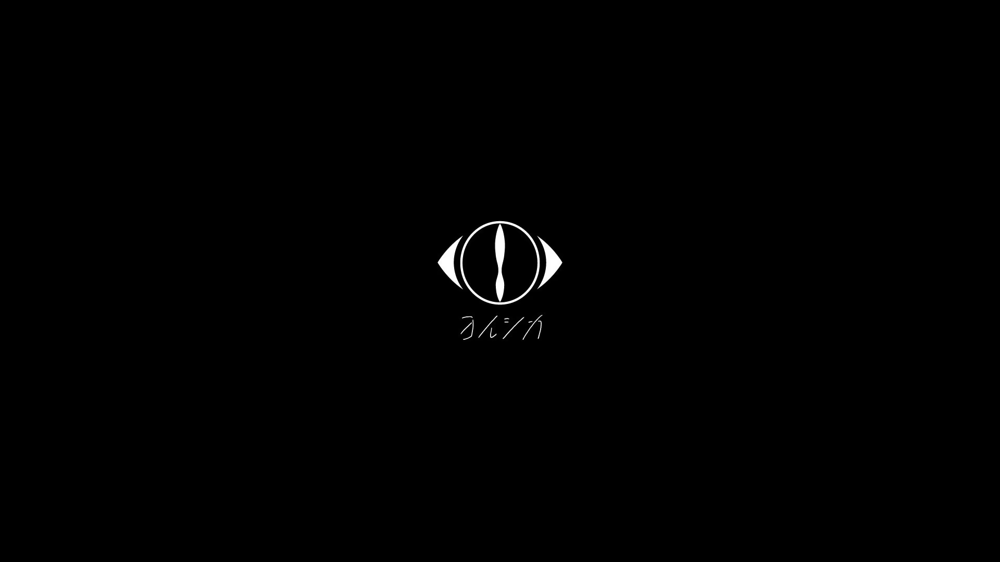
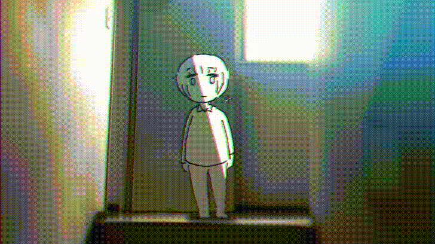

Yorushika (ヨルシカ), a band formed by composer n-buna and vocalist suis. The name "Yorushika" is taken from a lyric in their song The Clouds and the Ghost, yoru shika mō nemurezu ni (夜しかもう眠れずに, meaning "I can only sleep at night"). The eye-designed logo mark is a motif of two moons facing each other and also serves as a clock hand, portraying the time "from 6:00 to night".

